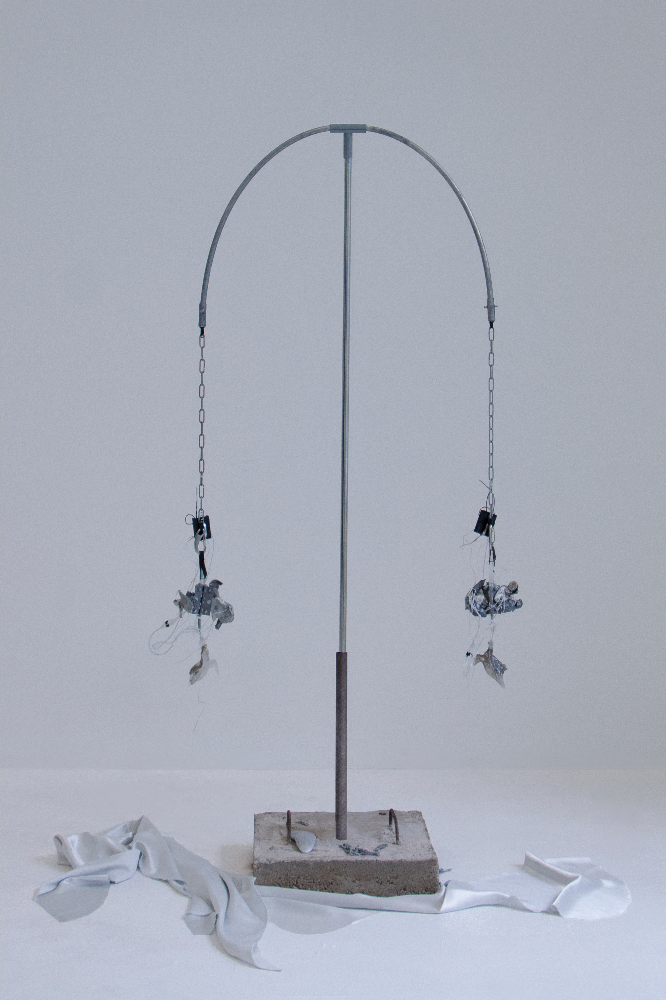
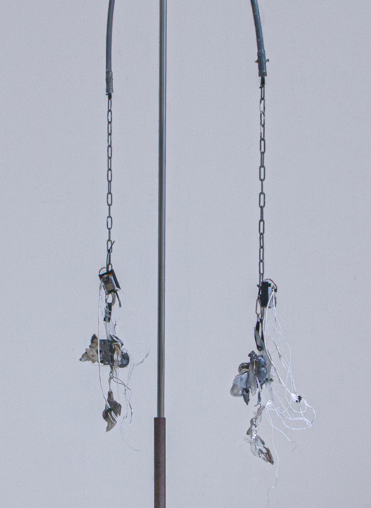

This interactive installation encapsulates a design crafted for the simultaneous engagement of two individuals. When a single person seals the shell, a subtle response emanates from the embedded buzzer. However, when two individuals synchronize the opening and closing of the shell simultaneously, the ensuing interplay between the two objects shapes the amplitude of the response sound, creating a heightened auditory experience.
In the natural world, hermit crabs seek refuge within the abandoned shells of deceased mollusks or other sturdy shells, reinforcing their delicate abdomens. These bivalves feature twin pore bodies that facilitate respiration and navigation across the seas as they rhythmically unveil and veil themselves. This perpetual cadence serves both as a protective measure and a testament to the sea's inherent influence, imprinting the impact of environmental forces and potential hazards.
In a parallel vein, the "shell" in this installation serves as an emblematic shelter, reminiscent of societal frameworks that cradle delicate bodies and ethereal spirits. The experiential resonance is revealed through passion and compassion, mirroring the way hermit crabs seek solace within their protective encasements.
*Arduino
*Zbrush

